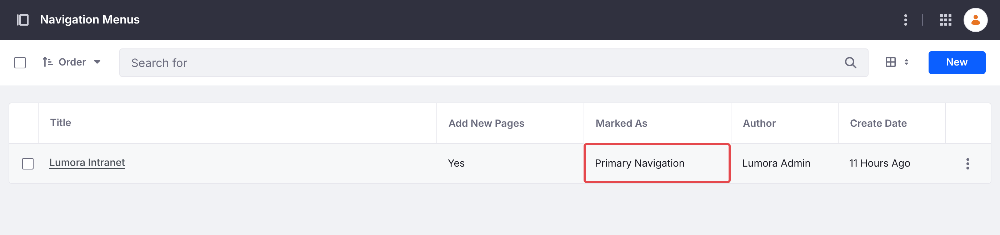
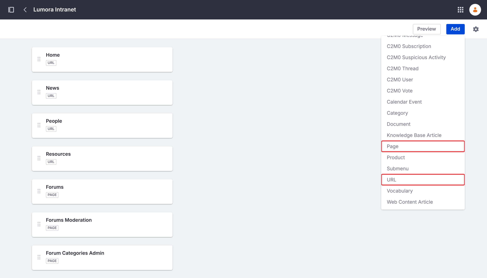
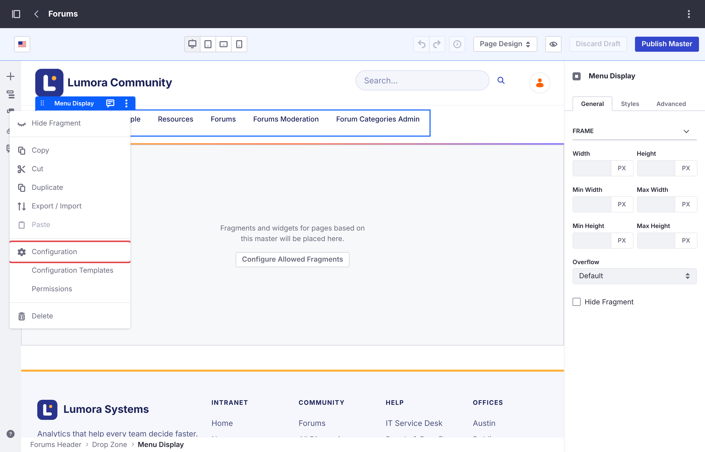
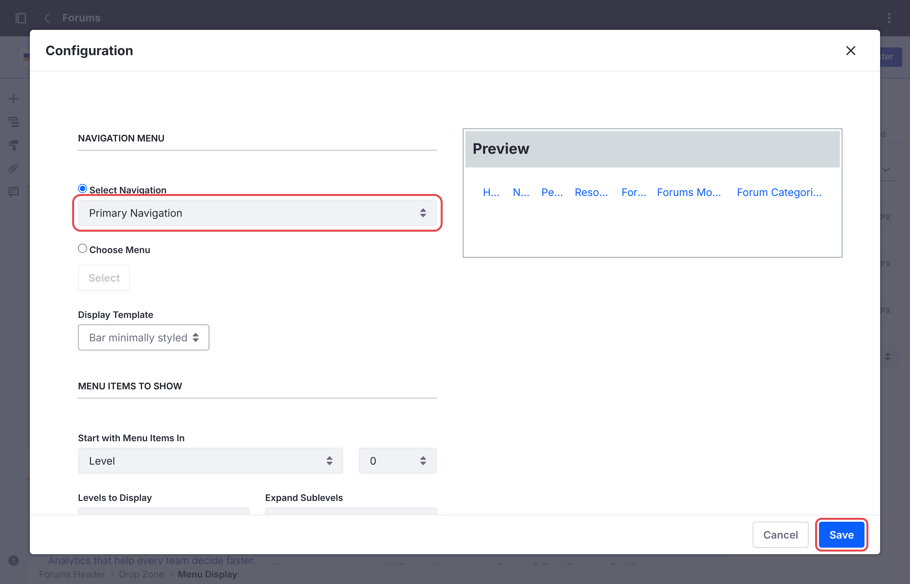

Running Several Forum Sites
One Liferay instance can host several forum sites, for example one per product or region. Each site has its own categories, topics, search, and bans.
A site initializer creates one site, so each site needs its own. Several Sites has the steps, for every install type. The batch and the microservice are shared by all forum sites and deployed once.
Liferay builds each site’s address from its name: a site named Acme is served at /web/acme. To use another address, choose a different name, or change the site’s friendly URL in Site Settings after it’s created.
Moderators and Category Admins
Bans apply to one site, but the Forum Moderator and Forum Category Admin roles apply to every forum site: a moderator of one forum site moderates them all. See Roles and Permissions.
An Existing Site
The forum can’t be added to a site that already exists, because Liferay sets up a site’s forum pages only when it creates the site. Forum sites are always top-level sites: they can’t be created as child sites of another. Create a forum site instead, and link the two sites to each other, so that members move between them as if they were one.
Link to the Forum From the Existing Site
In the existing site, add a page of the type Link to URL in Site Builder → Pages, for example Forums, pointing to the forum site’s address, such as /web/forums. It shows in the existing site’s navigation like its other pages.
Link Back From the Forum Site
The forum’s header lists the forum site’s own pages, so members who open the forum lose the existing site’s navigation. Give the forum site a navigation menu with the existing site’s pages first:
-
In the forum site, go to Site Builder → Navigation Menus, and add a menu, for example Main. In its settings, mark it as Primary Navigation.

-
Add the existing site’s pages as URL items, in the order the existing site shows them, for example Home at
/web/intranet/home, then News and People. -
Add the forum’s pages with Add → Page: Forums, then Forums Moderation and Forum Categories Admin. Page items keep their permissions, so members don’t see the two moderator pages.

-
Go to Design → Page Templates → Masters, and open Forums. Click the header’s menu to select its Menu Display widget, and choose Configuration from its options menu (⋮).

-
Set Select Navigation to Primary Navigation, and click Save. Then click Publish Master.

The forum’s header now shows the existing site’s pages, with Forums highlighted on the forum’s home page. To match the two sites’ look too, see Matching Your Company’s Look.
A Link to URL page in the forum site doesn’t work for this: Liferay doesn’t allow one as a site’s first page, so the existing site’s home page can’t come first that way.
Your Changes on Each Site
Each forum site has its own Forums master page, style book, and navigation menus. Changes to the look or the navigation of one forum site, as in Customizing the Forum, have to be made again on each of the others.
Deleting a Forum Site
See Deleting a Forum Site. Other forum sites aren’t affected.